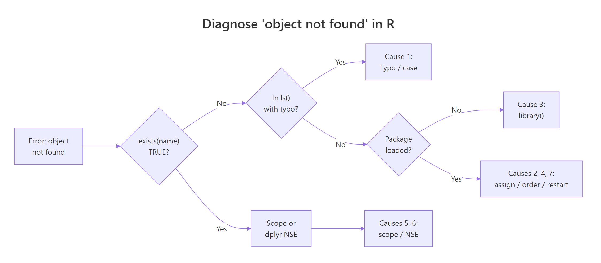

R Error: 'object not found', 7 Different Causes, 7 Different Fixes
Error: object 'x' not found means R searched every loaded package and the current environment but no variable, function, or dataset with that name exists. Either the object was never created, the name is misspelled, it lives in a different scope, or it was wiped when the session restarted.
What triggers R's "object not found" error?
Every time you type a bare name like my_df, R walks a short lookup chain, the current environment first, then any parents it can see, then every attached package. If no match turns up anywhere on that chain, R stops and reports the exact name in quotes. That name in quotes is your single most useful clue: it is exactly what R tried to look up, down to the last character.
The first line gives you the error message. The next two lines, exists() and ls(), tell you whether R truly has no such object (as here) or whether a similarly-named object exists that you typoed. Always run these two checks before guessing at the cause.
object 'Sales_Data' not found, then R searched for the name Sales_Data, not sales_data, not sales.data. Your fix begins by matching the lookup name character-for-character.Try it: Reproduce the error for a variable called ex_missing and confirm with exists().
Click to reveal solution
Explanation: Referencing a name that was never assigned triggers the error; exists() returns FALSE and confirms R genuinely has nothing under that name.
Cause 1, Typo or case mismatch: why can't R find the name you typed?
R is case-sensitive and treats sales_data, sales_Data, and Sales_Data as three completely different identifiers. A single wrong character is enough to break the lookup. This is the most common source of the error, often hiding as a capitalised first letter, an underscore swapped for a dot, or a plural tacked on.
The fix costs nothing once you spot the mismatch, the real win is catching typos before running the line. Use Tab completion inside RStudio or VS Code to let the IDE fill the name for you, and you will never mistype a variable that already exists in the environment.
Try it: The snippet below triggers the error. Find the typo and fix it so the last line prints 42.
Click to reveal solution
Explanation: Ex_price with a capital E is a different identifier from ex_price. Matching the case character-for-character fixes the lookup.
Cause 2, Forgot to assign with <-: where did my data go?
Any R expression with no assignment prints its result and throws it away. This catches readers of every experience level because the output looks like the data was stored, but nothing was captured in the environment. The tell is always the same: you "see" the data, then try to use it by name on the next line, and R reports it missing.
The output in the first block looks identical to the fixed version, which is exactly why this bug is so easy to miss. Always check that the line you wrote starts with name <- when you want the data to live past that statement.
read.csv("file.csv") without assignment is a silent loss. R prints the first few rows of the CSV, you assume it worked, and you then fail the next line with "object not found". Always write my_data <- read.csv("file.csv"), never just read.csv("file.csv").Try it: Fix the missing assignment so the second line prints the mean of the scores.
Click to reveal solution
Explanation: Without ex_scores <-, the vector is printed and discarded. The assignment binds the vector to the name so mean() can find it on the next line.
Cause 3, Package not loaded: how do I know where a function or dataset lives?
Datasets and functions shipped inside a package are invisible until you either attach the package with library() or reach in with the qualified pkg::name syntax. This cause often looks identical to Cause 1 because you have never seen the name in your script, you just remember that "someone used starwars in a tutorial" and typed it.
Fix A is safer for one-off references and makes the origin explicit in your code. Fix B is cleaner when you need many names from the same package. Either way, once library(dplyr) has run in the session, starwars becomes a bare name anywhere below it in the script.
requireNamespace("dplyr", quietly = TRUE) returns TRUE if installed. "dplyr" %in% loadedNamespaces() returns TRUE if loaded. "package:dplyr" %in% search() returns TRUE if attached. Only attached packages expose bare names to your scripts.Try it: Access R's built-in mtcars dataset through the datasets package with qualified syntax (no library() call).
Click to reveal solution
Explanation: datasets::mtcars reaches into the datasets package directly, no attachment required. It works for any installed package.
Cause 4, Running code out of order: why does a line that worked yesterday fail today?
RStudio's Run button, Ctrl+Enter, and "Run Selection" all encourage piecemeal execution. The result is a notebook that works when run top-to-bottom but breaks the moment you jump around. You run line 18, which depends on line 3, without first running line 3. R has no memory of what you meant to run; it only knows what you actually executed.
The fix is structural: run scripts from the top whenever you come back to them. Better still, organise work into a script you can rerun with source("analysis.R") or a Quarto / R Markdown document you can re-knit, both force a clean top-to-bottom execution every time.
Try it: The three lines below are in the wrong order. Reorder them so the last line prints the summary.
Click to reveal solution
Explanation: Each line depends on the one above it, so ex_values must be defined first, then summarised, then printed.
Cause 5, Different scope: why can't I see a variable defined inside a function?
Variables created inside a function body live in that function's local environment and vanish as soon as the function returns. From the caller's perspective, they never existed. This trips up readers who assume R behaves like a notebook where every name is global.
The fix is always to return what the caller needs. R functions return the value of their last expression, or whatever you pass to return(), and that value lives in the caller's environment once you assign it. Avoid the temptation to use <<- to push variables to the global environment; it makes code hard to reason about.
Try it: Rewrite ex_rescale so it returns the scaled vector instead of just assigning it internally.
Click to reveal solution
Explanation: The last expression in a function body becomes its return value. Naming scaled on its own line (or using return(scaled)) hands the vector back to the caller.
Cause 6, Column name doesn't exist inside dplyr verbs: why is it an "object" error and not a column error?
Inside dplyr::filter(), mutate(), arrange(), and friends, bare column names are resolved by a mechanism called non-standard evaluation (NSE). dplyr first looks for the name in the data frame, and if it can't find it there, it falls back to looking in the calling environment. When neither lookup succeeds, you see the familiar "object not found" error, even though the real problem is a missing column.
Always check your column names with names(df) or colnames(df) before using them inside a dplyr verb. The error's wording is confusing the first time you see it, the phrase "object not found" makes you hunt for a missing variable when the real culprit is a typo in a column name.
filter(), mutate(), or arrange() call, your first guess should be a column-name typo, not a missing variable.Try it: Fix the mutate() call below so it adds a new column hp_per_cyl equal to hp / cyl.
Click to reveal solution
Explanation: mtcars uses all-lowercase column names (hp, cyl), so HP and CYL fail NSE lookup and produce "object not found". Matching the case fixes it.
Cause 7, Environment cleared or session restarted: where did all my variables go?
Running rm(list = ls()) wipes everything in the global environment. So does clicking the broom icon in RStudio's Environment pane, or choosing Session → Restart R. After any of these, every name you previously created is gone and referencing it gives "object not found". The only cure is to re-run the script that created those names.
This is why reproducible scripts matter. If your analysis lives as a set of hand-run commands in the console, restarting your R session means hours of rebuilding state. If it lives in a .R file, the rebuild is a single source("analysis.R") call.
source("analysis.R") rebuilds your entire environment in one command. A Quarto or R Markdown document does the same thing with quarto render or rmarkdown::render(). Either option makes a cleared session a 2-second inconvenience instead of a 2-hour rebuild.Try it: After rm("ex_counter"), restore ex_counter to the value 5 and print it.
Click to reveal solution
Explanation: rm() removed the binding; you rebuild it with another <- assignment. There's no "restore", you just re-create.
Practice Exercises
Exercise 1: Diagnose the broken script
The 5-line script below throws Error: object 'revenue_df' not found on the last line. Identify which of the 7 causes is responsible and fix the script in one edit.
Click to reveal solution
Explanation: The second line creates a data frame but never captures it with <-, so revenue_df never existed when the third line referenced it. Adding the assignment is the one-edit fix.
Exercise 2: Write a diagnosis helper
Write a function diagnose_missing(name) that takes an object name as a string and prints the most likely cause by checking three conditions: whether the name exists, whether a similarly-cased name is in ls(), and whether the name lives in a loaded package.
Click to reveal solution
Explanation: The helper walks the three most common diagnoses in order, existence check, case-insensitive match in ls(), and package namespace scan, then falls through to the remaining causes.
Exercise 3: Catch the error and extract the missing name
Write run_safely(expr) that evaluates an expression and, if it fails with "object not found", returns the missing object's name as a string. If the expression succeeds, return its value. Use tryCatch().
Click to reveal solution
Explanation: tryCatch() intercepts the error condition. The regex pulls the quoted name out of the standard "object 'x' not found" message; any other error is re-thrown with stop(e).
Complete Example
Here's the full diagnosis loop you'd run the next time this error hits a real pipeline. The goal is to rule out each cause in order, from cheapest to most expensive, until you find the culprit.
Walking through the checks in this order, existence, case-insensitive match in ls(), column-name match, pins down the cause in under a minute for almost every real-world occurrence. The lowercase mpg fix is obvious once Step 4 reveals the mismatch.
Summary

Figure 1: How to diagnose which of the 7 causes is triggering your "object not found" error.
The seven causes of Error: object 'x' not found, with the quickest fix for each:
| # | Cause | Symptom | Fix |
|---|---|---|---|
| 1 | Typo or case mismatch | ls() shows a similarly-named object |
Match the name exactly (use Tab completion) |
| 2 | Forgot to assign with <- |
Output prints but exists() is FALSE |
Add name <- to the front of the expression |
| 3 | Package not loaded | Name lives in a package you haven't attached | library(pkg) or pkg::name |
| 4 | Ran code out of order | Line depends on an earlier line you skipped | Run the script top-to-bottom (Ctrl+Alt+B) |
| 5 | Different scope (function local) | Variable defined inside a function body | Return it as the function's value |
| 6 | dplyr column doesn't exist | Error inside filter() / mutate(), name is a column |
Check names(df) and match case |
| 7 | Environment cleared / session restart | ls() is empty or sparse |
Re-run the script or source("analysis.R") |
Keep exists("name"), ls(), and names(df) in your head as the three-step diagnosis, they rule out five of the seven causes in about ten seconds.
References
- R Core Team, An Introduction to R, Section 2.1: Lexical scope and environments. Link
- Wickham, H., Advanced R, 2nd Edition. Chapter 7: Environments. Link
- Wickham, H., Advanced R, 2nd Edition. Chapter 6: Functions and lexical scoping. Link
- dplyr documentation, Programming with dplyr (non-standard evaluation). Link
- R FAQ, Why doesn't R find my object? Link
- tidyverse style guide, assignment and naming conventions. Link
- Posit (RStudio), debugging with traceback() and debug(). Link
Continue Learning
- 50 R Errors Decoded: Plain-English Explanations and Exact Fixes, the parent reference covering all 50 most-common R error messages.
- R Error: could not find function 'X', Namespace & Package Conflicts, the sibling error for functions not found, with namespace and masking details.
- R Environments and Scoping, the deeper explanation of how R's lookup chain actually works, which makes Causes 5 and 7 click.